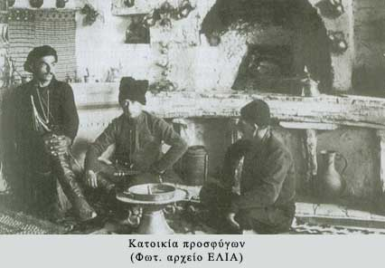

Η εγκατάσταση των προσφύγων σε περιοχή ακατοίκητη εκτός του πολεοδομικού συγκροτήματος της Αθήνας , οι
πολιτισμικές και γλωσσικές ιδιαιτερότητες καθώς και η διαφορά της ιδιοσυγκρασίας και νοοτροπίας έδιναν ελάχιστες
ευκαιρίες επικοινωνίας με τον ντόπιο πληθυσμό και καθιστούσαν δύσκολη την ένταξή τους στην ελληνική κοινωνία.
Το πρόβλημα ενίσχυε και η ξενοφοβία
του ντόπιου πληθυσμού καθώς αντιμετώπιζε τους πρόσφυγες ανταγωνιστικά στο
χώρο εργασίας και θεωρούσε την διαφορετικότητά τους απειλή για την κοινωνική του συνοχή. Η απουσία όμως θέσεων
εργασίας και σχολείων εντός του συνοικισμού της Καισαριανής έφερε τους πρόσφυγες σε επαφή με το γηγενή πληθυσμό
και σύντομα εμφανίζονται και οι πρώτοι μεικτοί γάμοι. Σταδιακά τη θέση της αμοιβαίας προκατάληψης και καχυποψίας
θα καταλάβει η επικοινωνία, η συνεργασία και η
αλληλεπίδραση, οι πρόσφυγες της Καισαριανής θα ενταχθούν στον
κοινωνικό ιστό και θα συμβάλλουν στην οικοδόμηση της σύγχρονης Ελλάδας.
Πρόσφυγες της Καισαριανής, που η μοίρα τους ήταν κοινή με αυτούς της Δραπετσώνας, της Καλαμαριάς, της Δράμας,
της Νέας Καισάρειας, της Ν. Κερασούντας, της Νέας Κίου, της Νέας Αλικαρνασσού και της δικής σου περιοχής, που δε
διαφέρουν με τους πρόσφυγες του Σεράγεβο, της Καμπούλ, του Ιράκ, της Παλαιστίνης, της Κύπρου, της Ρουάντα, όλου
του κόσμου...τους πρόσφυγες του Χτες και του Σήμερα.
Προφορική Μαρτυρία Εμ. Τσελίκου "Οι ... τουρκοσπορίτες"
Βίντεο ντοκουμέντο: Προσωπική Μαρτυρία 'Αννας Μοραντιάν "Από το Ιράν στην Ελλάδα"
|
|
 |